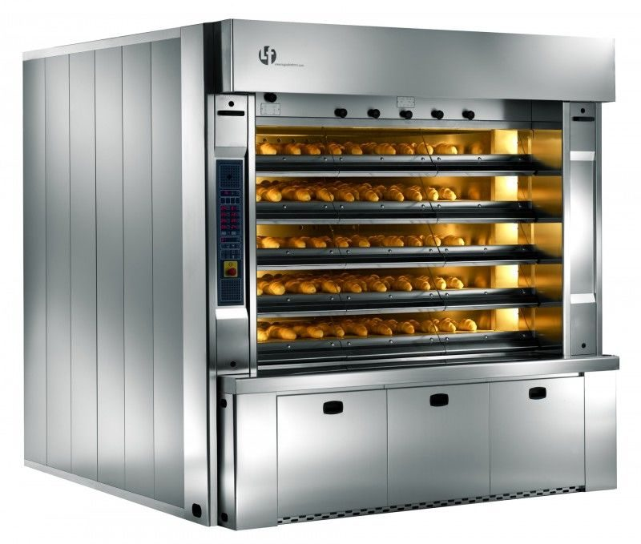
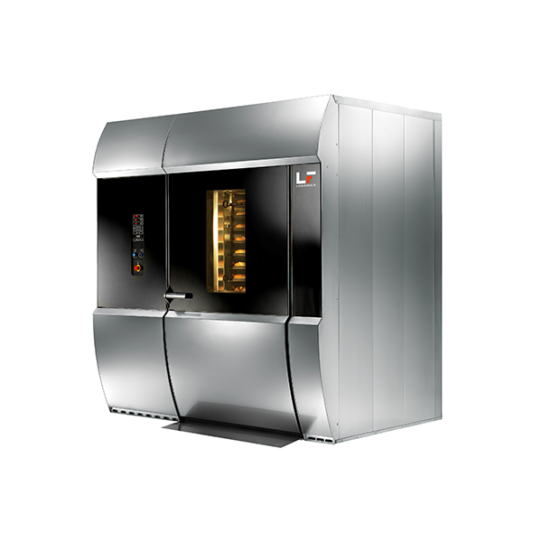
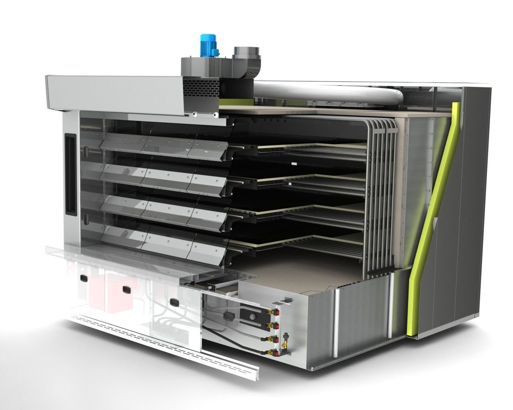

LOGIUDICE FORNI
Ротационные печи
Ротационная печь STREAM с тележкой для хлеба и кондитерских изделий. Теплообменник доступен для обслуживания, парогенератор расположен под ним.
- Модель STREAM
- Обшивка 1,2 мм
Фотографии и схемы






Описание и комплектация
Печи LOGIUDICE FORNIподходят для выпекания любых хлебобулочных и кондитерских
изделий. Благодаря компактному размеру, низкому потреблению
энергии и легкости в работе идеально подходит для эксплуатации
на небольших предприятиях хлебобулочной и кондитерской
промышленности.
ОСНОВНЫЕ ТЕХНИЧЕСКИЕ ХАРАКТЕРИСТИКИ ПЕЧИ С ТЕЛЕЖКОЙ МОД. STREAM
• Прямой доступ к теплообменнику, несмотря на уменьшенные габариты.
• Наружная обшивка, камера выпекания и камера сгорания печи изготовлены из нержавеющей стали,
толщиной 1,2 мм. Стандартные внешние панели из нержавеющей стали.
• Теплообменник новой модели был специально разработан для улучшения эффективности работы печи.
Шестигранная форма внутренней поверхности труб теплообменника обеспечивает плавное перемещение воздуха
и более высокую эффективность, в то время как, труба (на 25% длиннее) по которой двигаются пары из верхней
части теплообменника к нижней обеспечивает улучшение качества выпекания.
• Горелка находится в верхней части теплообменника, а вентилятор прямо над теплообменником; это
обеспечивает хорошую циркуляцию воздуха.
• Труба подачи горячего воздуха от теплообменника, которая
находится над камерой выпекания,
обеспечивает сильный поток горячего воздуха и уменьшает потери
тепла.
• Мощный парогенератор размещен под теплообменником. Весь
воздух, циркулирующий внутри печи,
используется для обогрева парогенератора, так как он проходит
через генератор и возвращается к
теплообменнику. Парогенератор включает в себя резервуар для
воды, который находится сверху 13
секций, в каждой из них расположены чугунные шарики, которые
обеспечивают длительную выработку
пара в большом количестве.
• Устройство для вращения тележки со стандартным крюком. Опция:
поворотный стол для тележки и
устройство для подъема тележки – по запросу.
• Прилагается стандартная цифровая или электромеханическая
панель контроля. Программируемая
цифровая панель с программами выпекания есть в наличии.